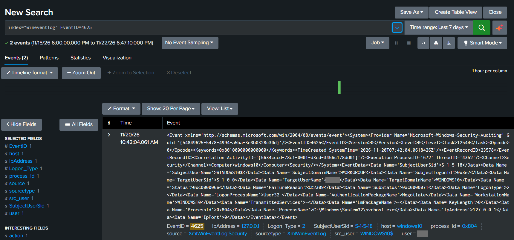
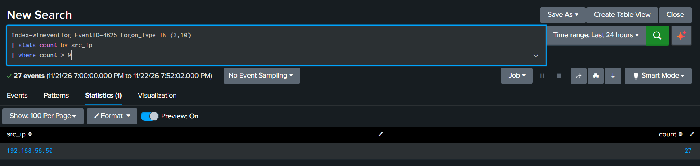
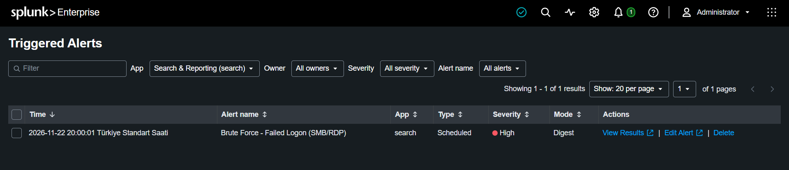

05 · SMB üzerinden brute force
Tek bir kaynak IP'den kısa sürede çok sayıda başarısız ağ/RDP girişi (4625, Logon Type 3 ve 10).
Saldırı
# Kali (192.168.56.50) → Windows VM (192.168.56.102), yalnızca host-only ağ
nxc smb 192.168.56.102 -u testuser -p ~/parolalar.txtTespit (SPL)
Tespit ve alert sorgusu
index=wineventlog EventID=4625 Logon_Type IN (3,10)
| stats count by src_ip
| where count > 9Scheduled alert
| Ayar | Değer |
|---|---|
| Tür | Scheduled, cron */5 * * * * |
| Zaman aralığı | Last 5 minutes |
| Tetikleme | Number of Results > 0, Once |
| Eylem | Add to Triggered Alerts, Severity High |
False positive'ler ve ayıklama
Saldırıdan önce son 7 güne baktım: yalnızca 2 adet 4625 vardı, ikisi de benim ekrandan girişimdi (Logon Type 2). Hata kodu parolanın süresinin dolduğunu söylüyordu. Gerçekten de Windows o gün parola değiştirmemi istemişti. Ağ üzerinden başarısız giriş hiç yoktu. Kural yalnızca Logon Type 3 (ağ) ve 10 (RDP) girişlerine baktığı için bu ikisi zaten kapsam dışında. Saldırının izindeki olaylardan biri de parola denemesi değil, netexec'in kendi el sıkışmasıydı.
Gerçek bir ortamda olası bir false positive de var: eski parolayla çalışmaya devam eden bir servis, tek kaynaktan sürekli 4625 üretebilir. BOTS v2 verisinde böyle bir örnek görmüştüm: 10.0.1.220'den Administrator hesabına 85 deneme, hiç başarılı giriş yok.
Düzeltmeler
Hydra'nın SMB modülü yeni SMB sürümleriyle anlaşamadı, saldırıyı netexec ile yaptım. Hesap 10 denemede kilitlendi. Tekrar testlerini, kilitlenmeyen ve var olmayan bir hesapla (testuser) yaptım.
Alert'i önce her dakika çalışıp son 1 dakikaya bakacak şekilde kurdum, tetiklenmedi. Sorguyu kendim çalıştırdığımda sonuç veriyordu, yani sorun sorguda değildi. Logların Splunk'a gelme süresini düşününce 1 dakikanın yetmediğini anladım ve hem çalışma aralığını hem pencereyi 5 dakikaya çıkardım. Alert bir sonraki saldırıda tetiklendi.
Eşiği 10 seçtim, çünkü parolasını unutan normal bir kullanıcı en fazla 5-6 kez dener, Windows da kilitleme sınırını 10 seçmiş. Bunun bir bedeli var: kilitleme sınırı daha düşük olan bir makinede hesap 10'a varmadan kilitlenir ve kural saldırıyı kaçırabilir. 5 dakikalık pencereye yayılan yavaş bir saldırı da eşiğin altında kalabilir.
Ekran görüntüleri



testuser ile: hesap kilitlenmiyor, yine 4625 üretiyor.
192.168.56.50, 27 başarısız giriş.
Test kanıtı
| Test | Zaman (VM saati) | Sonuç |
|---|---|---|
| Saldırı 1 | 2026-11-22 19:01 | 11 adet 4625 + 1 adet 4740; hesap kilitlendi |
| Elle tespit sorgusu | 2026-11-22 19:52 | 192.168.56.50, count 27 |
| Tekrar saldırı + alert | 2026-11-22 20:00 | Alert tetiklendi (Triggered Alerts, High) |
Çıkarılan ders
Windows'ta böyle bir kilitleme sınırı olduğunu görünce sevindim, çünkü saldırıyı epey zorlaştırıyor. Ama kilit yalnızca hesabı koruyor. Saldırganın IP'sini engellemiyor, saldırgan başka hesapları denemeye devam edebilir. Windows'un da saldırılara karşı önlemleri var ve tespitlerimi bunlara göre yazmam gerekiyor. Eşiğimi de bu yüzden kilitleme sınırına göre seçtim.
Tüm ayrıntılar (veri kaynakları, sınırlamalar, analistin sonraki adımları): detections/05-kaba-kuvvet-smb.md